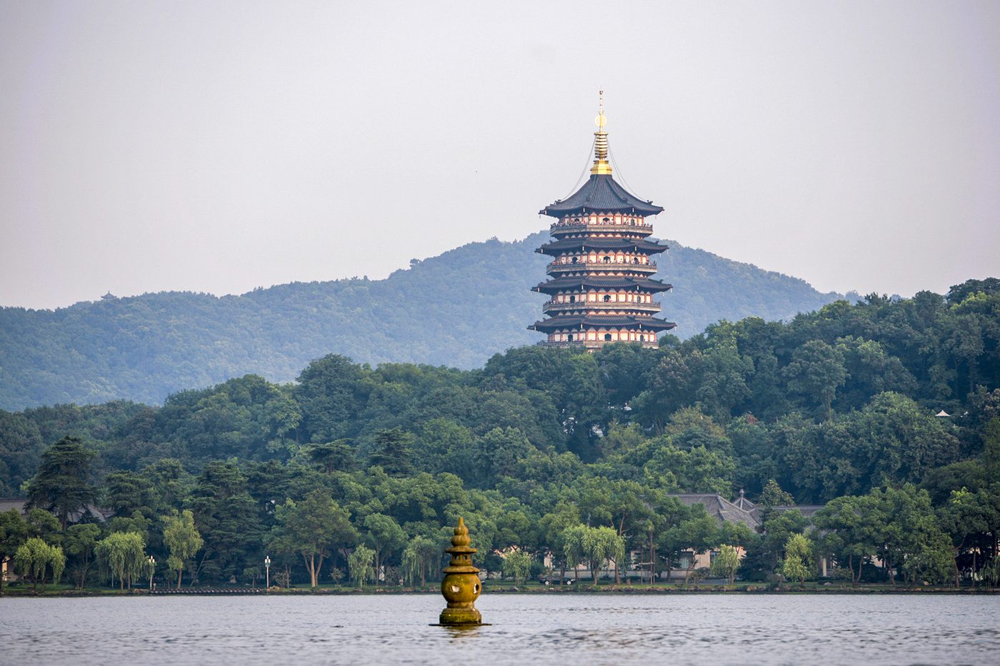

Photo: Windmemories · Wikimedia Commons · CC BY-SA 4.0
A short course in eight units
Hangzhou in Context
Asia, China, its great cities, and where Hangzhou fits among them. Written at about a 10th-grade level for a visitor who never had this class.
How to use this book
Each unit is one page. Read them in order: the book starts with the whole continent and zooms in, one step at a time, until it reaches the streets of Hangzhou. Every unit opens with what you will learn and the words to know, and ends with a few questions to check yourself. Tap "Show answer" under a question to see the answer.
Look for three kinds of boxes. Did you know? boxes hold a surprising fact. Worked example boxes walk through a calculation step by step. Look for it in Hangzhou boxes point to something you can see in the city.
Every number comes from a source listed at the bottom of its unit. Figures are for the end of 2025 unless a unit says otherwise.
Contents
Asia and Where China Sits
China is in East Asia, on the world's biggest continent, and it touches 14 countries by land.
China's Land and People
China is high and dry in the west and low and wet in the east, so almost everyone lives in the east.
How the Country Is Organized
Provinces hold cities, and cities hold districts and counties, which is why a Chinese city can include farms and hills.
History in Four Turning Points
China's capital moved many times over 2,100 years. Hangzhou had its turn about 800 years ago.
The City Map of China
Most of China's economy sits in three coastal city regions, plus a few giant inland cities.
Hangzhou Among China's Cities
Hangzhou is the capital of Zhejiang, a province built on private family businesses, and a home for internet and AI companies.
Hangzhou and Its Rivals
Hangzhou is usually compared with Suzhou, Chengdu, Wuhan and Nanjing, cities of similar size that make their money in different ways.
The City of Hangzhou
Hangzhou is a river city with a lake at its heart: the old town wraps around West Lake and the new business district lines the Qiantang River.
- '
'
Glossary
Every "word to know" from the eight units, in one alphabetical list with the unit it comes from.